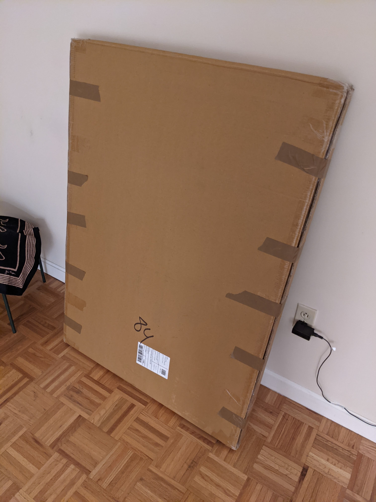

Table of Contents
1 はじめに
アメリカではクリスマスツリーとして本物のもみの木を毎年買って来ることが一般的と思います。切ったばかりのもみの木はいい香りがします。12月に入ると、屋根に買ったもみの木をくくりつけた車がよく走っています。
うちでも毎年小さめのもみの木を買っていたのですが、今年はそれができなくなりました。今のアパートはリース契約書に"live christmas tree"は駄目だと明記してあるのです。残念。まあ、クリスマス後(年明け)の片付けで、乾燥したツリーから落ちる葉や小枝で共用部の廊下がすごいことになるので、禁止したくなる気持ちは理解できます。
2 Tannenbaum
色々と吟味した結果、Crate & Barrelという家具ショップ(?)のこれ の48インチ版(120cmくらい)を見てみよう、ということになりました。大きさが気になったので、実店舗で現品確認することにしました。

早速週末に、NewtonのChestnutモールにあるCrate & Barrelに出かけましたが、ネットでは「在庫あり」となっていたのに、48インチサイズの在庫がありません。実際の大きさ等を見たかったのですが。店員さんが、送料なしでいいよ、と言ってくれたので、万一大きすぎた場合に返品可能であることを確認して、現物を見ずに購入しました。
3 大きすぎ＆重すぎた
1週間ほどして商品が届きました。まずは箱のサイズと重さにびっくりです。なんと、125x90cm^2、20kgもあるのです!
届いたパッケージ。あまりに大きく重いので、3階の部屋まで持ってくるだけで大変な思いをしました。 
日本から持ってきたIKEA体重計なのでkg表示。
箱を開けてみたところ、ツリーの木(幹＆枝相当)の部分と台座の部分がそのまま入っています。このサイズの箱をしまっておくスペースはありません。いくらなんでも、もう少しコンパクトに収納できると思ったのですが。
しかも、このサイズの箱で重さが20kgあります。体重50kgの私では、これを持ち上げたまま数メートル以上運ぶことが困難です。
一応、組み立てるだけ組み立てようと思ったのですが、なんと部品が一つ入っていません。いい加減に嫌になって返品を決意しました。一度も組み立てないまま、再び箱にパーツを戻し、ガムテープでとめます。
4 返品
返品はオンラインでできるようでした。Crate & Barrelのサイトに行き、返品ページに移動して注文番号を入れます。返品理由は「気が変わった」としました。部品が足りなかったので、defectとしてもよかったかもしれません。自己都合返品としたせいか、返送料を負担することになってしまいました。。。
Fedexで送り返すのですが、箱が大きすぎてFedex drop box店舗では扱えないようでした。うちから車で10分ほどの実店舗まで持っていかないとダメそうです。
問題は、うちのMini Clubmanに箱が入るか、です。入らなければ、最悪U-Haulなどでトラックを借りて持っていくしかありません。後部座席を倒してサイズを測ったところ、なんとか入ることがわかりました。Miniとはいえ、ステーションワゴンタイプを(たまたまですが)選んでおいて良かったです。
5 Fedexでドロップオフ
次の問題は、Fedex店舗の立地です。この店舗は交通量が多く、しかも中央分離帯を路面電車が走る街道に面していて、目の前に路駐できる可能性が限りなく低いのです。案の定、路上駐車スペースは全て埋まっていて、車を停められたのは50メートルほど離れた場所でした。
必死の思いで、休憩を何度も取りながら、やっと店舗に運ぶことができました。あとから気がついたのですが、店舗には台車が置いてありました。。。もっと早く気がつけばよかったです。
ドロップオフはスムーズにでき、一時はどうなるかと思われた厄介者を、やっと送り返すことができました。
6 終わりに
現物を見ずに通販で商品を購入すると、今回のようにサイズが大きすぎたというようなことがありがちだと思います。今回、運ぶことも難儀するような荷物が来て、その扱いに困り果てるという経験をしました。